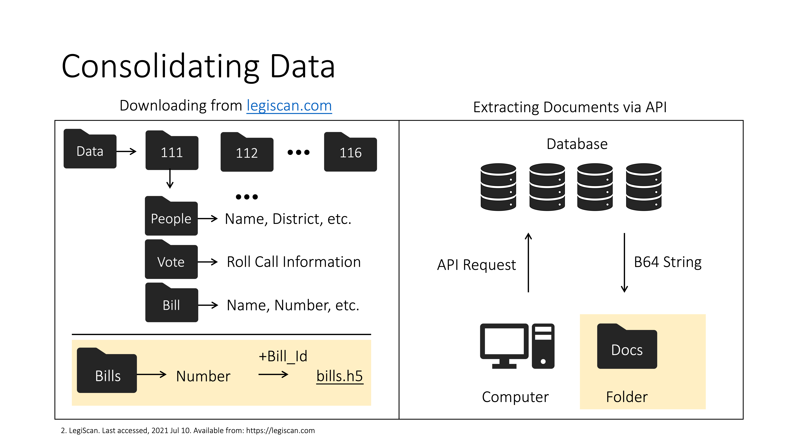
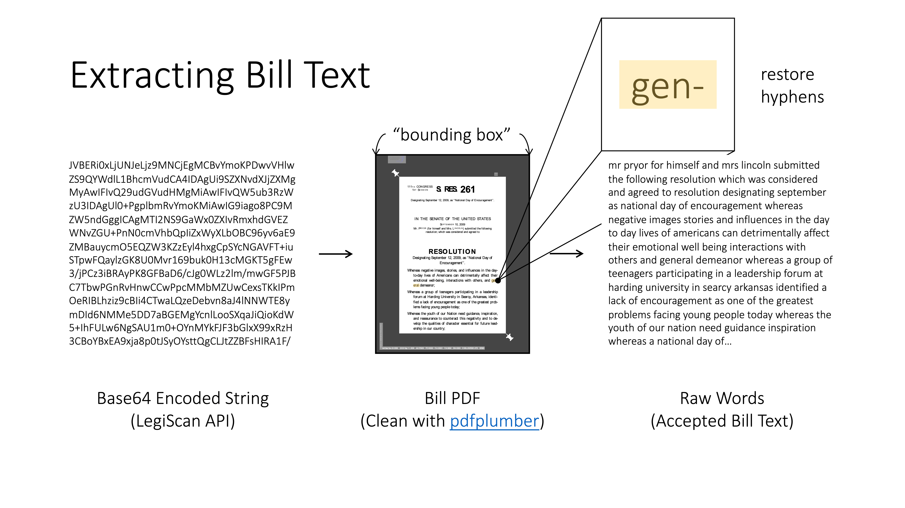
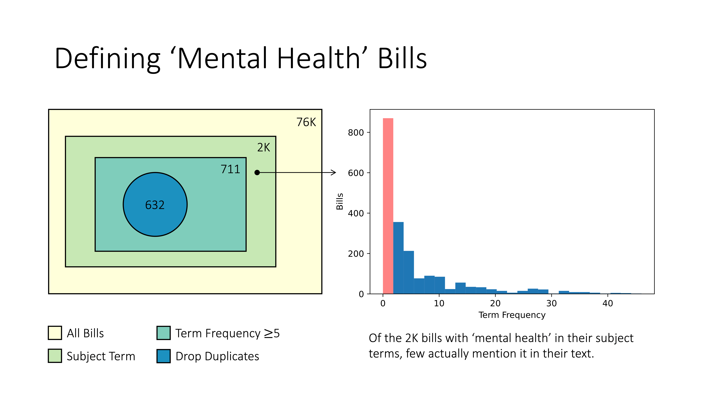
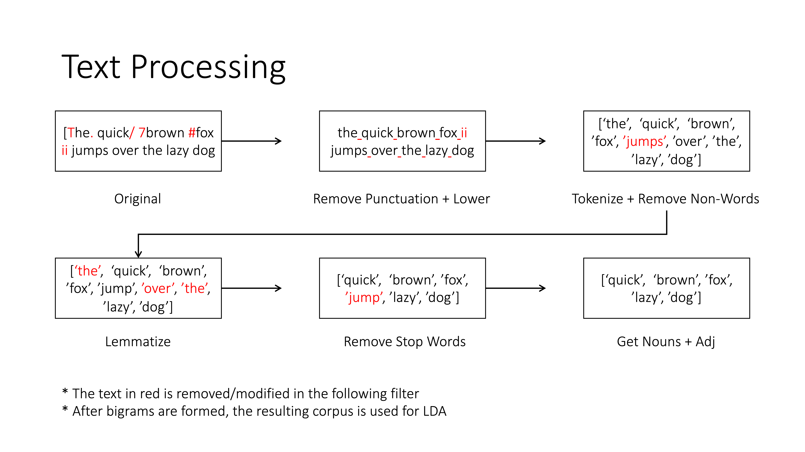
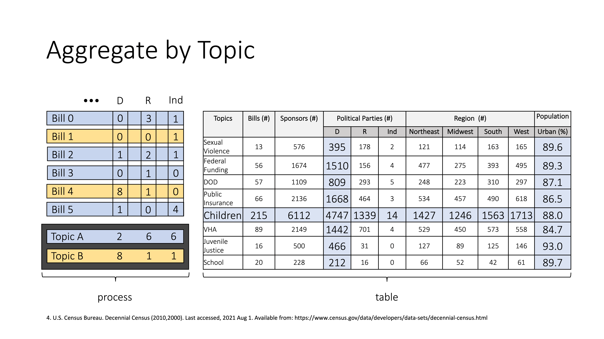

Methods
This page overviews the cleaning and preparation portion of our project. If you are interested in learning how to interpret MH-BiTs, please visit the Data Sources page.
Data was bulk-downloaded from LegiScan. As shown in the graphic above, the data was split into 6 folders labeled by the congressional session. For example, folder '111' denotes the 111th congress which spanned from 2009-2010. Inside each congress, there are three folders. Of importance to us is the 'Bills' folder which features several JSON-formatted files containing a variety of useful information (e.g., bill number, chamber of origin, sponsors, etc.) on all bills introduced in that session. After renaming the files using their internal LegiScan bill ID, we merged all 76K bills into a single folder. However, upon closer inspection, we noticed the files were missing the bill text! Luckily, the LegiScan API provides a get_text() function which returns a base64 encoded PDF.
At this point, we needed to extract actual text from the PDF documents. To do this, we leveraged an open-source Python project called pdfplumber. Upon inspection, we noticed that the PDF documents contained meta-data (highlighted in white) that interfered with the text extraction process. To get rid of it, we found a suitable bounding box (shown in gray) that removed unwanted elements. We also needed to restore hyphenated words among other text repair processes. While we couldn't ensure that all of the text was extracted correctly (several edge-cases popped up), we are confident that the somewhat lossy conversion didn't substantially impact subsequent analysis.
With the bill text on hand, we needed to better define what constitutes a mental health bill. As it so happens, the Congressional Research Service, assigns each bill a certain set of subject terms to describe its contents. Unfortunately, we found that topic models produced using the roughly 2K bills containing 'mental health' in their subject terms produced poor results. Upon inspecting the actual bill text, we found that the majority of these bills didn't mention the term 'mental health' in their bill text! We decided to (somewhat arbitrarily) filter for bills containing 5 or more occurrences of mental health in their bill text. After dropping duplicate bills (some passed the House and moved onto the Senate) we were left with a grand total of 632 bills.
With a working definition of mental health bills, we processed the bill text further. The first step gets rid of any non-alphabetical characters present in the text. These may arise when a bill cites a figure, names a section, etc. Afterwards, we tokenized the text (split it by whitespace) and removed non-words that may have emerged from text irregularities. Using NLTK's lemmatization tools helped prevent number or tense based differences. We also removed domain-specific jargon and words common in the English language (collectively called stop-words) to prevent over-saturation of irrelevant vocabulary. Stop Words included "section" or "is" to name a couple. Finally, we filtered for nouns and adjectives using NLTK's POS-tagging tools. The rationale is that topics are primarily communicated through those parts-of-speech. Once the bill text was sufficiently prepared, we passed the corpus into LDA and reviewed the resulting terms and weights with a subject matter expert who provided reasonable topic labels.
Once assignments were made, we began aggregating the data by topic. To estimate the urbanization variable, we linked census data from the American Community Survey using the bill's introduced date along with the congressional district(s) the author(s) represented. As indicated above, we found evidence that democrats tend to author mental health bills more than their republican counterparts.